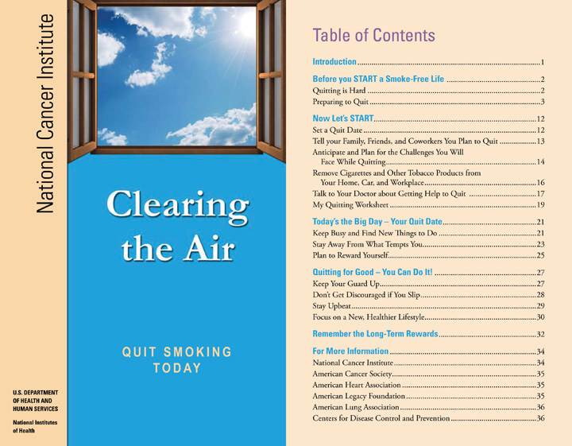
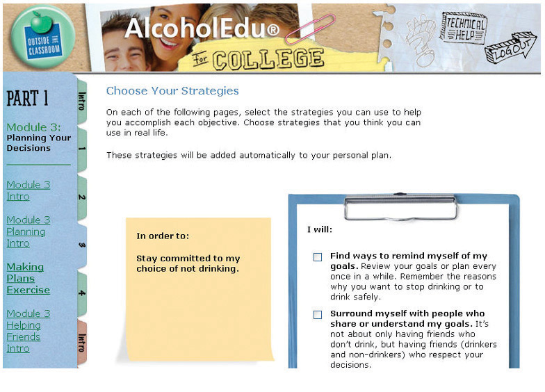

SubstanceA drug or other chemical typically used in an overindulgent manner for its effects on the body or mind. is the word health professionals use for most things you might take into your body besides food. When people talk about substances, they often mean drugsA substance used for treating, curing, or preventing disease (prescription and over-the-counter drugs) or used without medical reason to alter the body or mind (illegal drugs or prescription drugs used without prescription).—but alcohol and nicotine are also drugs and are considered substances.
Substances—any kind of drug—have effects on the body and mind. People use these substances for their effects. But many substances have negative effects, including being physically or psychologically addictiveHaving the characteristic of becoming physically or psychologically habit forming, causing cravings; the person becomes dependent on the substance and suffers adverse effects on withdrawal.. What is important with any substance is to be aware of its effects on your health and on your life as a student, and to make smart choices. Use of any substance to the extent that it has negative effects is generally considered abuseThe use of illegal drugs or the use of prescription or over-the-counter drugs or alcohol for other than their intended purposes or in excessive amounts..
First, consider your own habits and attitudes with the Substance Use Self-Assessment.
Check the appropriate boxes.
| Daily | Sometimes | Never | |
|---|---|---|---|
| 1. I smoke cigarettes or use smokeless tobacco. | |||
| 2. I drink beer or other alcohol. | |||
| 3. I have missed a class because I was hung over from drinking the night before. | |||
| 4. I have taken a medication that was not prescribed for me. | |||
| 5. I have used an illegal drug. |
Write your answers.
If you smoke cigarettes, how many a day do you usually smoke?
__________________________________________________________________
__________________________________________________________________
If you drink alcohol (including beer), on how many days in a typical week do you have at least one drink?
__________________________________________________________________
__________________________________________________________________
If you drink at parties or when out with friends, how many drinks (or beers) do you typically have at one time?
__________________________________________________________________
__________________________________________________________________
If you use a pharmaceutical or illegal drug, how often do you take it?
__________________________________________________________________
__________________________________________________________________
Are your habits of smoking, drinking, or using other drugs affecting your studies or grades?
__________________________________________________________________
__________________________________________________________________
Everyone knows smoking is harmful to one’s health. Smoking causes cancer and lung and heart disease. Most adult smokers continue smoking not because they really think it won’t harm them but because it’s very difficult to stop.
If you have never smoked or used smokeless tobacco, feel good about your choices. But read this section anyway because you may have friends now or in the future who smoke, and it’s important to understand this behavior. If you do smoke, even only rarely as a “social smoker,” be honest with yourself—wouldn’t you like to stop if you thought you could without suffering? Simply by being in college now, you’ve shown that you care about your future and your life. You likely care about your health, too.
Many young smokers think there is plenty of time to quit later. Social smokers, who may have a cigarette only occasionally with a friend, usually think they won’t develop a habit. But smokers are fooling themselves. NicotineA habit-forming stimulant found in tobacco, which raises blood pressure, increases heart rate, and has toxic effects throughout the body. is one of the most addictive drugs in our society today. Admitting this to yourself is the first step toward becoming smoke free.
First, the good news. Stopping smoking brings immediate health benefits, and the benefits get better over time. Just twenty minutes after quitting, your heart rate drops. After two weeks to three months, your heart attack risk begins to drop and your lung function begins to improve. After one year, your added risk of coronary heart diseaseA heart disease caused by damage to the arteries that supply blood and oxygen to the heart. is half that of a smoker’s. And every year your health continues to improve.
Stopping isn’t easy. Many ex-smokers say it was the hardest thing they ever did. Still, over 45 million adults in the United States once smoked and then successfully stopped.
You know it’s worth the effort. And it’s easier if you think it through and make a good plan. There’s lots of help available. Before you quit, the National Cancer Institute suggests you START with these five important steps:
To get ready, download the booklet “Clearing the Air: Quit Smoking Today” at http://www.smokefree.gov. The table of contents of that booklet (Figure 10.3) outlines the basic steps that will help you be successful.
Figure 10.3
“Clearing the Air,” a downloadable booklet available at http://www.smokefree.gov, presents a plan for stopping smoking that works for many smokers.
Remember that the urge to smoke will come and go. Try to wait it out. Use these tips:
Learn to relax quickly by taking deep breaths.
A lot of people are not able to stop smoking by themselves, so don’t feel bad if you aren’t successful the first try. Ask your doctor about other ways to stop. Maybe nicotine-replacement therapyThe use of a nicotine product (in gum, patches, etc.) intended to replace nicotine obtained from smoking, thereby making it easier for the person to stop smoking. is what you need. Maybe you need prescription medication. Stop by your college’s student health center and learn about smoking cessationThe general term for any of many different programs developed to help people stop smoking, including use of medications, counseling, group therapy and support, hypnosis, and other programs. programs. Your doctor and other health professionals at your school have a lot of experience helping people—they can help you find what works for you.
Of all the issues that can affect a student’s health and success in college, drinking causes more problems than anything else. Everyone knows what happens when you drink too much. Your judgment is impaired and you may behave in risky ways. Your health may be affected. Your studies likely are affected.
Most college students report drinking at least some alcohol at some time—and even those who do not drink are often affected by others who do. Here are a few facts about alcohol use among college students from the National Institute on Alcohol Abuse and Alcoholism:
So why is drinking so popular if it causes so many problems? You probably already know the answer to that: most college students say they have more fun when drinking. They’re not going to stop drinking just because someone lectures them about it.
Like everything else that affects your health and happiness—eating, exercise, use of other substances—drinking is a matter of personal choice. Like most decisions we all face, there are trade-offs. The most that anyone can reasonably ask of you is to be smart in your decisions. That means understanding the effects of alcohol and deciding to take control.
Myth: I can drink and still be in control.
Fact: Drinking impairs your judgment, which increases the likelihood that you will do something you’ll later regret such as having unprotected sex, being involved in date rape, damaging property, or being victimized by others.
Myth: Drinking isn’t all that dangerous.
Fact: One in three 18- to 24-year-olds admitted to emergency rooms for serious injuries is intoxicated. And alcohol is also associated with homicides, suicides, and drownings.
Myth: I can sober up quickly if I have to.
Fact: It takes about three hours to eliminate the alcohol content of two drinks, depending on your weight. Nothing can speed up this process—not even coffee or cold showers.
Myth: I can manage to drive well enough after a few drinks.
Fact: About one-half of all fatal traffic crashes among 18- to 24-year-olds involve alcohol. If you are under 21, driving after drinking is illegal and you could lose your license.
Myth: Beer doesn’t have as much alcohol as hard liquor.
Fact: A 12-ounce bottle of beer has the same amount of alcohol as a standard shot of 80-proof liquor (either straight or in a mixed drink) or 5 ounces of wine.National Institute on Alcohol Abuse and Alcoholism, “Alcohol Myths,” College Drinking—Changing the Culture, http://www.collegedrinkingprevention.gov/CollegeStudents/alcoholMyths.aspx (accessed July 13, 2010).
Colleges have recognized the problems resulting from underage and excessive alcohol use, and in recent years they have designed programs to help students become more aware of the problems. If you are a new student, you may be in such a program now. Two popular online programs, AlcoholEdu and My Student Body, are used at many schools.
Figure 10.4 The AlcoholEdu Online Alcohol Awareness Program from Outside the Classroom
The goal of these courses is not to preach against drinking. You’ll learn more about the effects of alcohol on the body and mind. You’ll learn about responsible drinking versus high-risk drinking. You’ll think about your own attitudes and learn coping strategies to help prevent or manage a problem. These courses are designed for you—to help you succeed in college and life. They’re worth taking seriously.
There’s no magic number for how many drinks a person can have and how often. If you’re of legal drinking age, you may not experience any problems if you have one or two drinks from time to time. “Moderate drinking” is not more than two drinks per day for men or one per day for women. More than that is heavy drinking.
As with most things that can affect your health and your well-being as a student, what’s important is being honest with yourself. You’re likely drinking too much or too often if
Did you know that one night of heavy drinking can affect how well you think for two or three weeks afterward? This can really affect how well you perform as a student.
Most of us can remember times when we were influenced by our friends and others around us to behave in some way we might not have otherwise. Say, for example, I have a big test tomorrow, and I’ve been studying for hours, and just when I knock off to relax for a while, a friend stops by with a six-pack of beer. I’d planned to get to bed early, but my friend pops open a beer and sticks it in my hand, saying it will help me relax. So I tell myself just one, or maybe two—after all, that’s not really drinking. And let’s say I stop after two (or three) and get to bed. Maybe I don’t sleep quite as well, but I still pass the test in the morning. So—was that peer pressure or my decision?
There are no easy answers! What matters is that you think about your own habits and choices and how to take control of your own life.
Read this case study about a student who joins a college fraternity and feels pressured to drink. You may be very different from him—maybe you’re older and work full time and are taking night courses—but you still should be able to relate to his issues. As you answer the questions about his situation, think about how the same questions might also apply to someone in your own situation.
Pressured to Drink
When John decided to pledge a fraternity in college, he knew there would likely be drinking in the house. He had had a few beers at parties through high school but had never binged and felt there was nothing wrong with that as long as he kept it under control. But he was surprised how much alcohol flowed through the fraternity house, and not just at parties—and the house advisor just seemed to look the other way. He wanted to fit in, so he usually had a few whenever his roommate or others called him away from studying. One night he definitely drank too much. He slept late, missed his first two classes, and felt rotten most of the day. He told himself he’d drink only on weekends and only in moderation. Being underage didn’t bother him, but his grades hadn’t been all that great in high school, and he didn’t want to screw up his first year in college. But it was only one day before some of the older fraternity brothers interrupted his studying again and stuck a beer in his hand. He didn’t know what to do.
Is John at risk for developing any problems if he tries to fit in with the drinkers while promising himself he would drink only moderately? Why or why not?
__________________________________________________________________
__________________________________________________________________
If John decides to hold firm and drink only on weekends when he didn’t have to study, is he still at any risk for developing a problem? Why or why not, depending on what circumstances?
__________________________________________________________________
__________________________________________________________________
If John decides to tell his fraternity brothers he does not want to drink, what should he say or do if they continue to pressure him?
__________________________________________________________________
__________________________________________________________________
If you think you may be drinking too much, then you probably are. Can you stop—or drink moderately if you are of age—and still have fun with your friends? Of course. Here are some tips for enjoying yourself in social situations when others are drinking:
Because drinking is a serious issue in many places, it’s a good idea to know what to do if you find yourself with a friend who has had too much to drink:
Visit the student health center or talk with your college counselor. They understand how you feel and have a lot of experience with students feeling the same way. They can help.
People use drugs for the same reasons people use alcohol. They say they enjoy getting high. They may say a drug helps them relax or unwind, have fun, enjoy the company of others, or escape the pressures of being a student. While alcohol is a legal drug for those above the drinking age, most other drugs—including the use of many prescription drugsA drug prescribed to a specific person for a specific medical condition by a health-care provider; many prescription drugs are illegal when used by someone other than the person for whom it was prescribed. not prescribed for the person taking them—are illegal. They usually involve more serious legal consequences if the user is caught. Some people may feel there’s safety in numbers: if a lot of people are using a drug, or drinking, then how can it be too bad? But other drugs carry the same risks as alcohol for health problems, a risk of death or injury, and a serious impact on your ability to do well as a student.
As with alcohol, the choice is yours. What’s important is to understand what you’re doing and make smart choices. What’s the gain, and what are the risks and costs?
While society may seem to condone drinking, and the laws regarding underage drinking or being drunk in public may not seem too harsh, the legal reality of being caught with an illegal drug can impact the rest of your life. Arrest and conviction may result in being expelled from college—even with a first offense. A conviction is a permanent legal record that can keep you from getting the job you may be going to college for.
Although the effects of different drugs vary widely, a single use of a drug can have serious effects and consequences. Even if you’re told that a pill is a prescription medication whose effects are mild or safe, can you really be sure of the exact ingredients and strength of that pill? Do you fully understand how it can affect you with repeated use? Can it be addictive? Could it show up on an unexpected random drug test at work?
Table 10.1 "Common Prescription and Illegal Drugs on Campuses" lists some of the possible effects of drugs used by college students. Good decisions also involve being honest with oneself. Why do I use (or am thinking about using) this drug? Am I trying to escape some aspect of my life (stress, a bad job, a boring class)? Could the effects of using this drug be worse than what I’m trying to escape?
Table 10.1 Common Prescription and Illegal Drugs on Campuses
| Drug and Common Names | Intended Effects | Adverse Effects | Common Overdose Effects |
|---|---|---|---|
| Anabolic Steroids | Muscle development | Liver cancer, sterility, masculine traits in women and feminine traits in men, aggression, depression, mood swings | — |
| Barbiturates | Reduced anxiety, feelings of well-being, lowered inhibitions | Addiction; slowed pulse and breathing; lowered blood pressure; poor concentration; fatigue; confusion; impaired coordination, memory, and judgment | Coma, respiratory arrest, death |
| Prescription Opioids: OxyContin, Vicodin, Demerol | Pain relief, euphoria | Addiction, nausea, constipation, confusion, sedation, respiratory depression | Respiratory arrest, unconsciousness, coma, death |
| Heroin | Pain relief, anxiety reduction | Addiction, slurred speech, impaired vision, respiratory depression | Respiratory failure, coma, death |
| Morphine | Pain relief, euphoria | Addiction, drowsiness, nausea, constipation, confusion, sedation, respiratory depression | Respiratory arrest, unconsciousness, coma, death |
| Ritalin | Stimulant: mood elevation, increased feelings of energy | Fever, severe headaches, paranoia, excessive repetition of movements and meaningless tasks, tremors, muscle twitching | Confusion, seizures, aggressiveness, hallucinations |
| Amphetamines: Dexedrine, Benzedrine, methamphetamine | Stimulant: mood elevation, increased feelings of energy | Addiction, irritability, anxiety, increased blood pressure, paranoia, psychosis, depression, aggression, convulsions, dizziness, sleeplessness | Convulsions, death |
| Cocaine, Crack | Stimulant: mood elevation, increased feelings of energy | Addiction, paranoia, hallucinations, aggression, insomnia, and depression, elevated blood pressure and heart rate, increased respiratory rate, insomnia, anxiety, restlessness, irritability | Seizures, heart attack, death |
| Ecstasy | Stimulant: mood elevation | Panic, anxiety, depression, paranoia, nausea, blurred vision, increased heart rate, hallucinations, fainting, chills, sleep problems | Seizures, vomiting, heart attack, death |
| Marijuana, Hash | Euphoria | Impaired or reduced comprehension, altered sense of time; reduced ability to perform tasks requiring concentration and coordination; paranoia; intense anxiety attacks; impairments in learning, memory, perception, and judgment; difficulty speaking, listening effectively, thinking, retaining knowledge, problem solving | — |
| LSD | Hallucinogen: altered states of perception and feeling | Elevated blood pressure, sleeplessness, tremors, chronic recurring hallucinations (flashbacks) | — |
If you have questions or concerns related to drug use, your doctor or student health center can help. Check these Web sites for additional information:
“Social smoking”—having a cigarette just every now and then with a friend—may not have significant health effects, but why is this still a problem?
__________________________________________________________________
For each of the following statements about drinking, circle T for true or F for false:
| T | F | After a few drinks, you can sober up more quickly by eating or drinking coffee. |
| T | F | A fourth of college students experience academic consequences from their drinking. |
| T | F | A 12-ounce beer has about half the alcohol of a standard shot of 80-proof liquor. |
| T | F | Moderate drinking is defined as no more than four drinks a day for men or two drinks a day for women. |
| T | F | A night of heavy drinking affects your thinking ability for up to two weeks afterward. |
If smoking marijuana relaxes you, can it minimize the stress you may feel over time in your life? Why or why not?
__________________________________________________________________